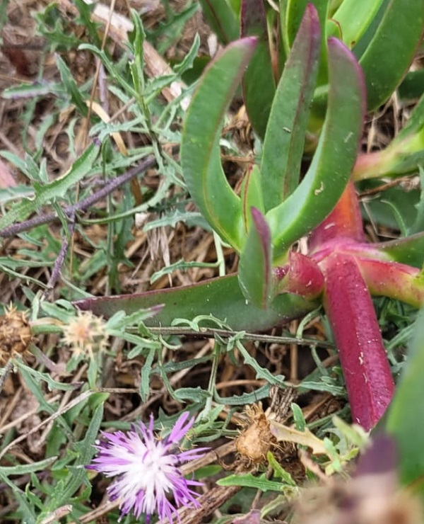
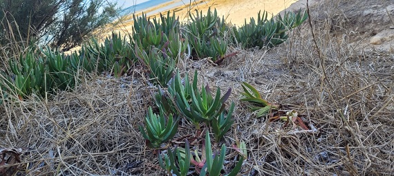
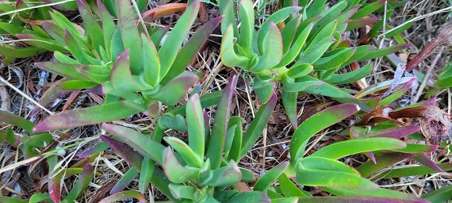
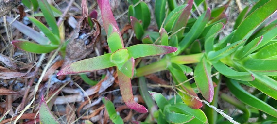

Un "complexe d'hybrides" ?
de Carpobrotus acinaciformis (L.) L.Bolus., 1927
et de Carpobrotus edulis (L.) N.E.Br., 1926
Griffe de sorcière,
ficoïde à feuilles en sabre,
ficoïde comestible
Famille des Aizoaceae
Ordre des Caryophyllales
Clades des Pentapetalae / Gunneridae / Eudicotyledons
 Plage de Chaucre, Île d'Oléron (Charente-Maritime), 23 août 2026 © Claire Martin-Lucy |
| C'est la couleur de ses fleurs qui fait penser à un "complexe d'hybrides" ou groupe d'espèces proches et déjà hybrides qui s'entrecroisent activement dans la nature (alors qu'un hybride est issu du croisement entre deux individus de variétés, de sous-espèces ou d'espèces différentes). |
| CARPOBROTUS sp. Griffe de sorcière, ficoïde à feuilles en sabre, ficoïde comestible Au bord de l'Océan Atlantique
 Plage de Chaucre, Île d'Oléron (Charente-Maritime), 24 août 2026 © Claire Martin-Lucy Origine supposée des noms
Détails caractéristiques Plage de Chaucre, Île d'Oléron (Charente-Maritime), 24 août 2026 © Claire Martin-Lucy
 Plage de Chaucre, Île d'Oléron (Charente-Maritime), 24 août 2026 © Claire Martin-Lucy
Nombre d'espèces dans le genre en France
|